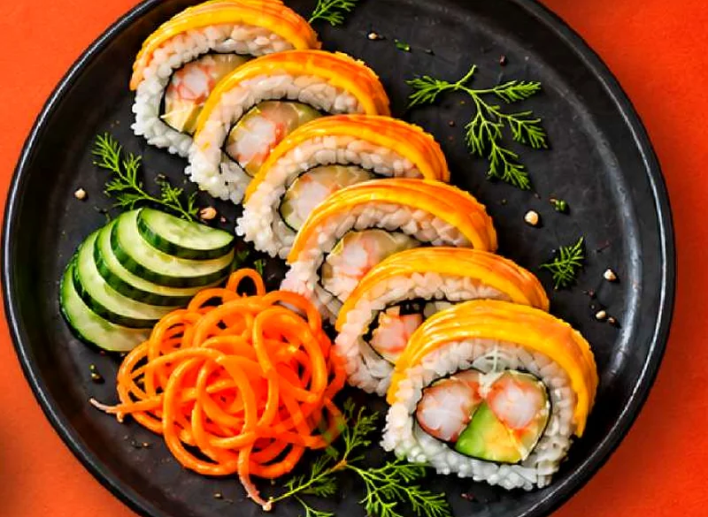

SUSHI & WOK ✳ MAKI MAKIOROLLS ESPECIALESMM / 01
EXPLORA NUESTRA FUSIÓN
Nikkei
Tilapia fresca, camarones tempura y aguacate, coronados con nuestra salsa acevichada nikkei. Un encuentro entre dos culturas en cada bocado.
VER EN LA CARTA ↗SABOR CON ACENTO LOCAL ✳